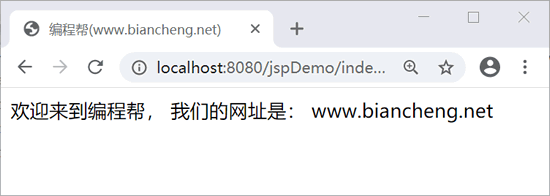

JSP自定义标签
自定义标签就是用户（开发者）自己定义的标签。自定义标签可以让 JSP 页面中不含有 Java 代码，只含有 HTML 代码和部分标签，就能实现业务逻辑的调用。
自定义标签的优点如下：
使用自定义标签步骤如下：
使用自定义标签有以下 2 种格式：
custom.tld 代码如下：
自定义标签的优点如下：
- 减少 JSP 页面对脚本的需求和依赖性
- 将 JSP 页面和业务逻辑分开，增加了程序的可维护性
- 可重复调用相同的业务逻辑，增加了程序的可重用性
使用自定义标签步骤如下：
- 自定义标签实现类
- 编写 tld 标签库描述文件
- 在 JSP 页面中使用自定义标签
自定义标签的语法
使用 taglib 指令指定 tld 文件的路径。<%@ taglib prefix="ex" uri="WEB-INF/custom.tld"%>
其中：prefix 指定自定义标签的前缀，uri 指定 tld 文件的路径。使用自定义标签有以下 2 种格式：
<prefix:tagname attr1=value1....attrn=valuen />
或
<prefix:tagname attr1=value1....attrn=valuen >
标签体
</prefix:tagname>
简单示例
下面创建一个简单的自定义标签 <bc:Hello>。1. 创建处理标签的Java类
创建处理标签的 HelloTag 类，代码如下：
package net.biancheng;
import java.io.IOException;
import javax.servlet.jsp.JspException;
import javax.servlet.jsp.JspWriter;
import javax.servlet.jsp.tagext.SimpleTagSupport;
public class HelloTag extends SimpleTagSupport {
public void doTag() throws JspException, IOException {
JspWriter out = getJspContext().getOut();
out.println("欢迎来到编程帮，我们的网址是：www.biancheng.net");
}
}
以上代码重写了doTag() 方法，getJspContext() 方法用来获取 JspContext 对象，并将 out.println 中的内容传递给 JspWriter 对象。注意：SimpleTagSupport 实现了 SimpleTag 接口，该接口是 JSP 2.X 标签库新增的自定义标签接口类。该接口极其简单，提供了 doTag() 方法去处理自定义标签中的逻辑以及标签体。相对来说，JSP 1.X 比较复杂，处理标签的 Java 类需要继承 TagSupport 类，重写 doStartTag()、doAfterBody()、doEndTag() 等方法。
2. 创建tld标签库描述文件
tld 文件采用 XML 文件格式进行描述，后缀名为.tld，用来将写好的类映射成 JSP 标签。tld 文件保存在 WEB-INF 目录下，为了管理方便，可以在目录下创建 tlds 文件夹。custom.tld 代码如下：
<?xml version="1.0" encoding="UTF-8"?>
<!DOCTYPE taglib
PUBLIC "-//Sun Microsystems, Inc.//DTD JSP Tag Library 1.2//EN"
"http://java.sun.com/j2ee/dtd/web-jsptaglibrary_1_2.dtd">
<taglib>
<!-- 标签库版本号 -->
<tlib-version>1.0</tlib-version>
<!-- JSP版本号 -->
<jsp-version>2.0</jsp-version>
<!-- 当前标签库的前缀 -->
<short-name>Example TLD</short-name>
<tag>
<!-- 自定义标签的名称，在页面中通过它来使用标签 -->
<name>Hello</name>
<!-- 自定义标签的实现类路径 -->
<tag-class>net.biancheng.HelloTag</tag-class>
<!-- 正文内容正文内容，没有则用 empty 表示 -->
<body-content>empty</body-content>
<!-- 自定义标签的功能描述 -->
<description>输出内容</description>
</tag>
</taglib>
tld 文件中只能有一对 taglib 标签，taglib 标签下可以有多个 tag 标签，每个 tag 标签代表一个自定义标签。文章后面会对 tld 文件中的各个标签进行说明。
3. 使用自定义标签
使用自定义标签和使用 JSTL 标签是一样的， JSP 文件中使用 Hello 标签代码如下。
<%@ page language="java" contentType="text/html; charset=UTF-8"
pageEncoding="UTF-8"%>
<%@ taglib prefix="bc" uri="WEB-INF/tlds/custom.tld"%>
<!DOCTYPE html>
<html>
<head>
<title>编程帮(www.biancheng.net)</title>
</head>
<body>
<bc:Hello />
</body>
</html>
运行结果如下。

图 1 自定义标签运行结果
图 1 自定义标签运行结果
tld标签库描述文件
tld 文件中常用的标签有 taglib、tag、attribute 和 variable。下面以 custom.tld 文件为例介绍其含义。1. <taglib>标签
<taglib> 标签用来设置整个标签库信息，其说明如下表所示。| 属 性 | 说 明 |
|---|---|
| tlib-version | 标签库版本号 |
| jsp-version | JSP版本号 |
| short-name | 当前标签库的前缀 |
| uri | 页面引用的自定义标签的 uri 地址 |
| name | 自定义标签名称 |
| tag-class | 自定义标签实现类路径 |
| description | 自定义标签的功能描述 |
| attribute | 自定义标签的指定属性，可以有多个 |
2. <tag>标签
<tag> 标签用来定义标签具体的内容，其说明如下表所示。| 属 性 | 说 明 |
|---|---|
| name | 自定义标签名称 |
| tag-class | 自定义标签实现类 |
| body-content | 有 3 个值：empty（表示没有标签体）、JSP（表示标签体可以加入 JSP 程序代码）、tagdependent（表示标签体中的内容由标签自己处理） |
| description | 自定义标签的功能描述 |
| attribute | 自定义标签功能的指定属性，可以有多个 |
| variable | 自定义标签的变量属性 |
3. <attribute>标签
<attribute> 标签用来定义 <tag> 标签中的属性，其说明如下表所示。| 属 性 | 说 明 |
|---|---|
| name | 属性名称 |
| description | 属性描述 |
| required | 指定属性是否是必须的，默认值：false |
| rtexprvalue | 属性值是否支持 JSP 表达式 |
| type | 定义该属性的 Java 类型，默认值：String |
| fragment | 如果声明了该属性，属性值将被视为一个 JspFragment |
使用 <attribute> 的属性时要注意元素顺序。
4. <variable> 标签
<variable> 标签用来定义 <tag> 标签中的变量属性，其说明如下表所示。| 属 性 | 说 明 |
|---|---|
| declare | 变量声明 |
| description | 变量描述 |
| name-from-attribute | 指定的属性名称，其值为变量，在调用 JSP 页面时可以使用的名字 |
| name-given | 变量名（标签使用时的变量名） |
| scope | 变量的作用范围，有 3 个值：NESTED 开始和结束标签之间、AT_BEGIN 从开始标签到页面结束、AT_END 从结束标签之后到页面结束 |
| variable-class | 变量的 Java 类型，默认值：String |
自定义标签属性
在自定义标签中设置属性，自定义标签类中必须有相应的 setter 方法。为 <bc:Hello> 标签添加 message 属性，HelloTag 类代码如下：
package net.biancheng;
import java.io.IOException;
import java.io.StringWriter;
import javax.servlet.jsp.JspException;
import javax.servlet.jsp.JspWriter;
import javax.servlet.jsp.tagext.SimpleTagSupport;
public class HelloTag extends SimpleTagSupport {
private String message;
public void setMessage(String message) {
this.message = message;
}
StringWriter sw = new StringWriter();
public void doTag() throws JspException, IOException {
if (message != null) {
// 从属性中使用 message
JspWriter out = getJspContext().getOut();
out.println(message);
} else {
// 从内容中使用 message
getJspBody().invoke(sw);
getJspContext().getOut().println(sw.toString());
}
}
}
下面使用 <attribute> 标签为 <bc:Hello> 标签添加 message 属性：
<?xml version="1.0" encoding="UTF-8"?>
<!DOCTYPE taglib
PUBLIC "-//Sun Microsystems, Inc.//DTD JSP Tag Library 1.2//EN"
"http://java.sun.com/j2ee/dtd/web-jsptaglibrary_1_2.dtd">
<taglib>
<tlib-version>1.0</tlib-version>
<jsp-version>2.0</jsp-version>
<short-name>Example TLD</short-name>
<tag>
<!-- 自定义标签的名称，在页面中通过它来使用标签 -->
<name>Hello</name>
<!-- 自定义标签的实现类路径 -->
<tag-class>net.biancheng.HelloTag</tag-class>
<!-- 正文内容类型，若没有正文内容，则用 empty 表示 -->
<body-content>tagdependent</body-content>
<attribute>
<name>message</name>
</attribute>
</tag>
</taglib>
这时就可以在 JSP 页面中使用 message 属性了，如下：
<%@ page language="java" contentType="text/html; charset=UTF-8"
pageEncoding="UTF-8"%>
<%@ taglib prefix="bc" uri="WEB-INF/tlds/custom.tld"%>
<!DOCTYPE html>
<html>
<head>
<title>编程帮(www.biancheng.net)</title>
</head>
<body>
<bc:Hello message="欢迎来到编程帮，我们的网址是：www.biancheng.net"/>
</body>
</html>
运行结果如图 1 所示。自定义标签的标签体
可以像 JSTL 标签库一样在标签中包含消息内容，如在 Hello 标签中包含内容，JSP 使用格式如下：<bc:Hello> 欢迎来到编程帮，我们的网址是：www.biancheng.net </bc:Hello>修改 HelloTag 类，如下：
package net.biancheng;
import java.io.IOException;
import java.io.StringWriter;
import javax.servlet.jsp.JspException;
import javax.servlet.jsp.tagext.SimpleTagSupport;
public class HelloTag extends SimpleTagSupport {
StringWriter sw = new StringWriter();
public void doTag() throws JspException, IOException {
getJspBody().invoke(sw);
getJspContext().getOut().println(sw.toString());
}
}
修改 custom.tld 文件，如下：
<?xml version="1.0" encoding="UTF-8"?>
<!DOCTYPE taglib
PUBLIC "-//Sun Microsystems, Inc.//DTD JSP Tag Library 1.2//EN"
"http://java.sun.com/j2ee/dtd/web-jsptaglibrary_1_2.dtd">
<taglib>
<tlib-version>1.0</tlib-version>
<jsp-version>2.0</jsp-version>
<short-name>Example TLD</short-name>
<tag>
<!-- 自定义标签的名称，在页面中通过它来使用标签 -->
<name>Hello</name>
<!-- 自定义标签的实现类路径 -->
<tag-class>net.biancheng.HelloTag</tag-class>
<!-- 正文内容类型，若没有正文内容，则用 empty 表示 -->
<body-content>tagdependent</body-content>
</tag>
</taglib>
运行结果如图 1 所示。关注公众号「站长严长生」，在手机上阅读所有教程，随时随地都能学习。内含一款搜索神器，免费下载全网书籍和视频。

微信扫码关注公众号